Wildlife Animals
Wildlife animals are the heart of nature, bringing balance, beauty, and life to our planet.
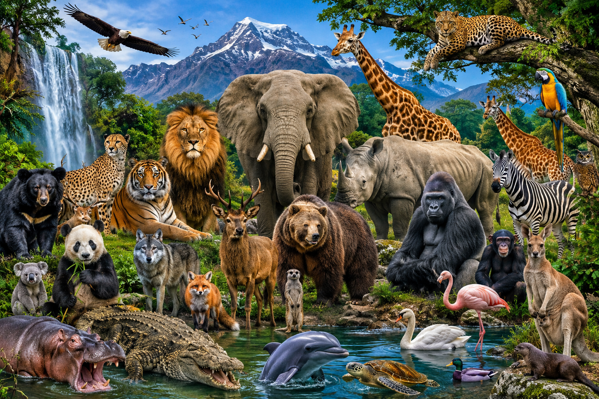
Wildlife animals are the heart of nature, bringing balance, beauty, and life to our planet.
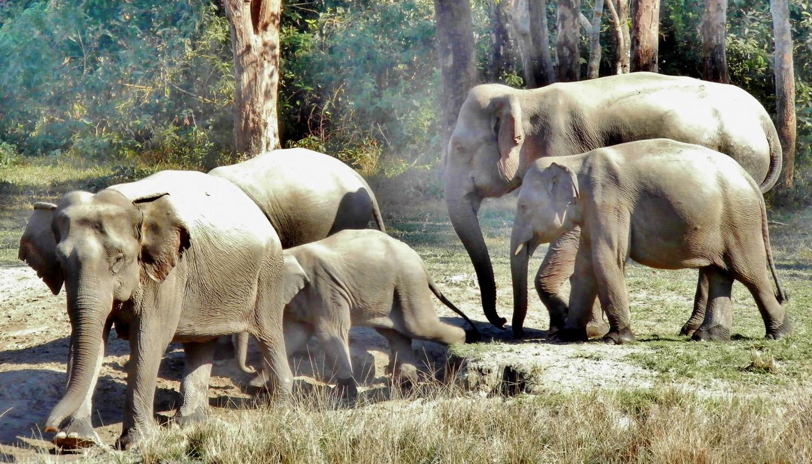
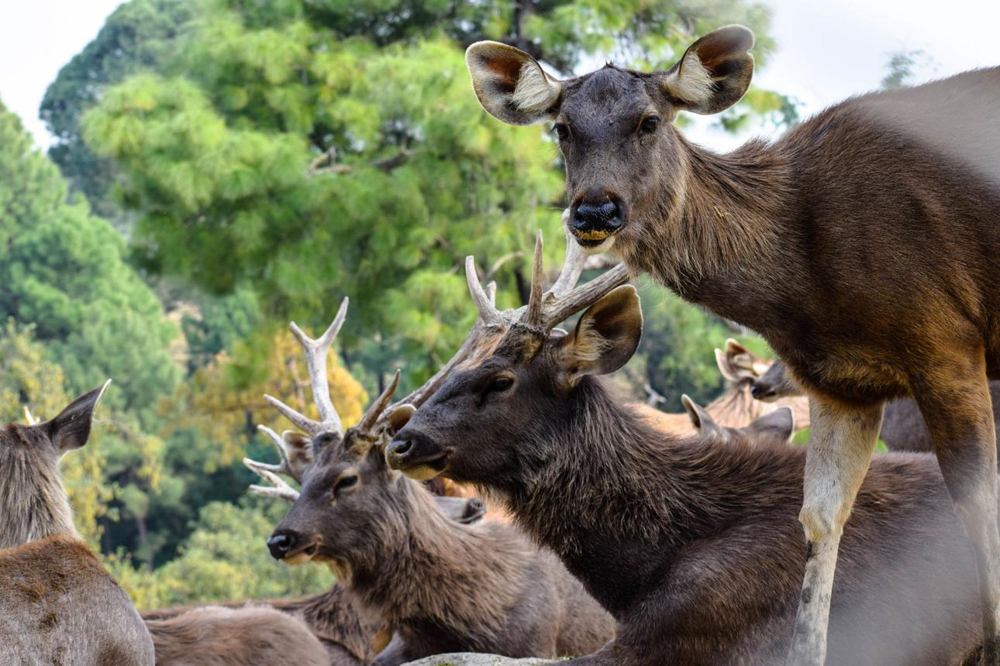
Wild animals are animals that live naturally in forests, grasslands, deserts, oceans, and mountains without depending on humans for food or shelter. They are an important part of nature and help maintain ecological balance in the environment. Wild animals can be found in different habitats around the world, and each species plays a unique role in the ecosystem. Some wild animals are herbivores, such as elephants and deer, while others are carnivores like lions and tigers. There are also omnivores like bears that eat both plants and meat.
Many wild animals are known for their strength, speed, intelligence, and survival skills. Lion is often called the “King of the Jungle” because of its power and leadership. Tiger is famous for its hunting ability and beautiful striped body. Asian elephant is the largest land animal and is known for its intelligence and strong memory. Animals like giraffes, zebras, wolves, crocodiles, dolphins, and monkeys also attract people because of their unique characteristics and behaviors.
Wild animals are very important for protecting forests and maintaining biodiversity. They help in seed dispersal, controlling animal populations, and keeping the food chain balanced. However, many wild animals are endangered due to deforestation, hunting, pollution, and climate change. Governments and wildlife organizations are working hard to protect animals through national parks, wildlife sanctuaries, and conservation programs. Protecting wild animals is necessary to preserve nature and ensure that future generations can experience the beauty and diversity of wildlife.
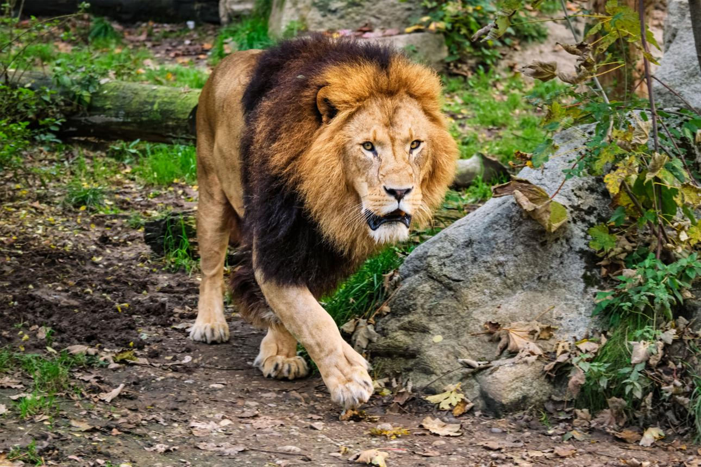
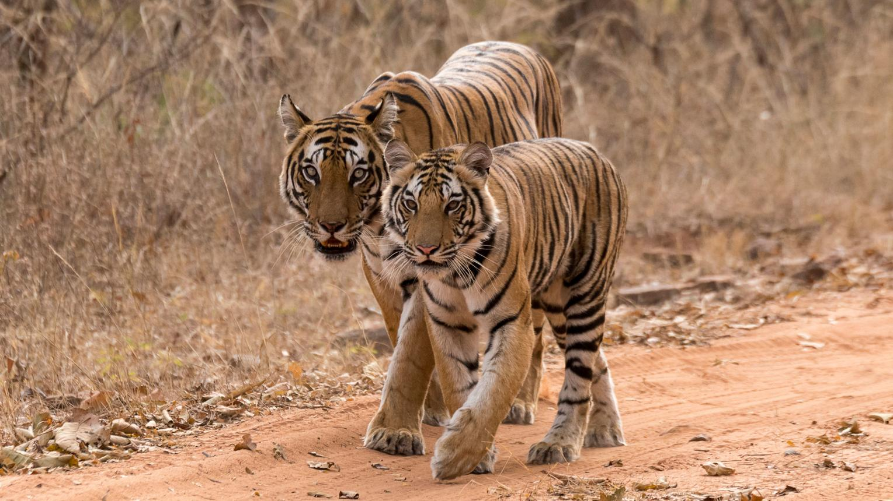
Forest animals are animals that live in forests and jungles where they find water, shelter, and protection. Forests provide a natural habitat for many different species of animals, birds, reptiles, and insects. These animals play an important role in maintaining the balance of nature and keeping the ecosystem healthy. Forests are rich in biodiversity, which means many kinds of living organisms survive together in the same environment.
Many powerful and well-known wild animals live in forests. Tiger is one of the strongest predators found in dense forests and is known for its speed and hunting skills. Lion lives in forest and grassland regions and is famous for its strength and leadership. Asian elephant is the largest land animal and uses its trunk for eating, drinking water, and protecting itself. Animals like deer, monkeys, bears, foxes, and wolves also live in forests and depend on trees and plants for survival.
Forest animals have special adaptations that help them survive in the wild. Some animals have sharp teeth and claws for hunting, while others have strong legs for running fast and escaping predators. Certain animals use camouflage to hide among trees and leaves to protect themselves from danger. Birds living in forests build nests on trees and help in spreading seeds, which supports forest growth.
Forests are very important because they provide oxygen, control climate, and support wildlife. However, many forest animals are losing their homes because of deforestation, pollution, and illegal hunting. Wildlife sanctuaries and national parks are created to protect these animals and preserve forests for future generations. Protecting forest animals is necessary to maintain ecological balance and preserve the beauty of nature.
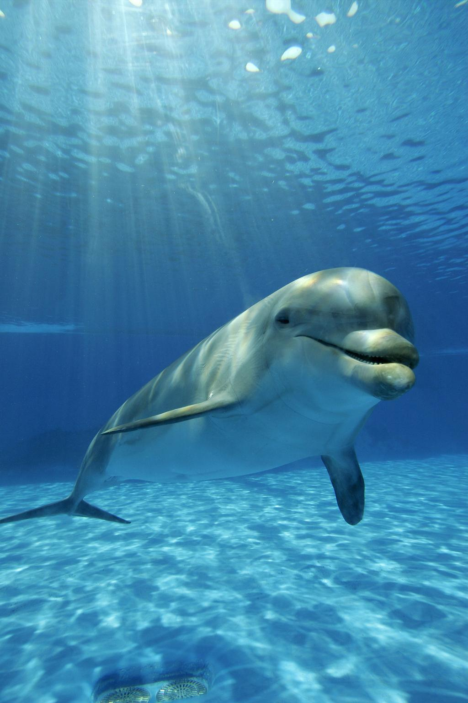
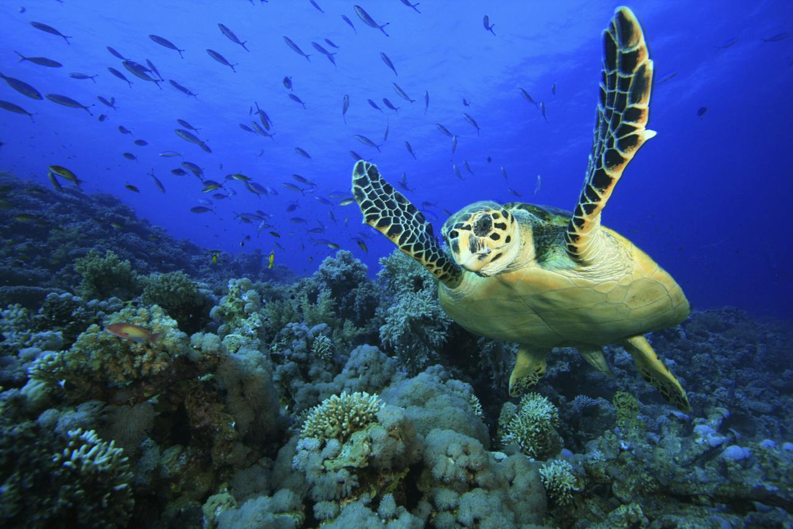
Marine animals are animals that live in oceans, seas, coral reefs, and other saltwater environments. These animals are an important part of marine ecosystems and help maintain the balance of ocean life. Marine habitats cover most of the Earth’s surface and support a huge variety of living organisms, from tiny fish to massive whales. Oceans provide food, oxygen, and climate regulation, making marine life essential for the planet.
Many fascinating animals live in the ocean. Dolphin is known for its intelligence, playful nature, and ability to communicate using sounds. Shark is a powerful predator that helps maintain the balance of marine ecosystems by controlling fish populations. Blue whale is the largest animal on Earth and can grow longer than a bus. Other marine animals such as octopuses, jellyfish, sea turtles, crabs, starfish, and seahorses are also important parts of underwater life.
Marine animals have unique adaptations that help them survive in water. Fish use gills to breathe underwater, while whales and dolphins come to the surface to breathe air through blowholes. Many sea creatures have fins and streamlined bodies that help them swim quickly and move easily in the ocean. Some animals, like octopuses, can change color to hide from predators, while others use sharp teeth or venom for protection.
Oceans and marine animals are facing many threats today because of pollution, oil spills, plastic waste, overfishing, and climate change. Plastic waste in oceans can harm fish, turtles, and birds, while rising temperatures damage coral reefs and marine habitats. Many countries and environmental organizations are working to protect marine life through conservation programs, marine parks, and awareness campaigns. Protecting marine animals is important for preserving ocean ecosystems and maintaining the health of the planet.
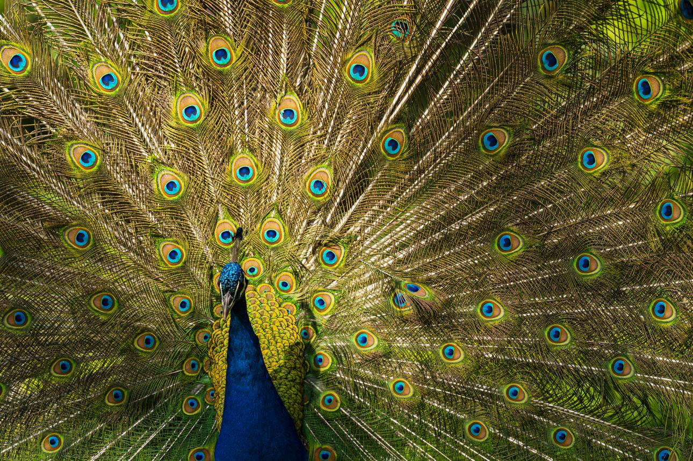
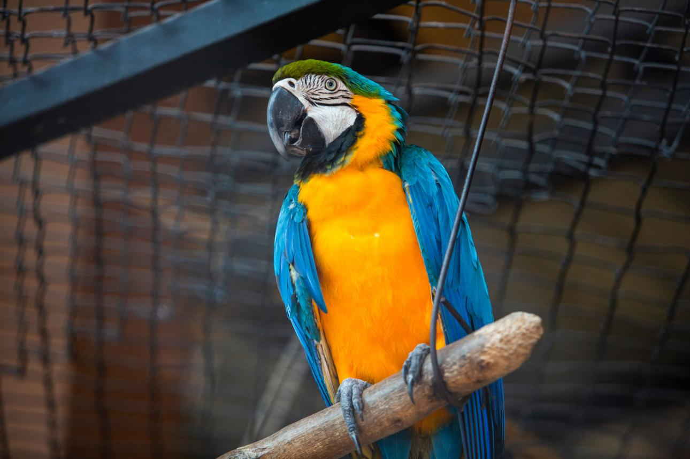
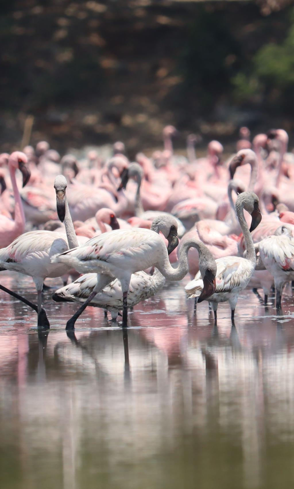
Birds are one of the most beautiful and diverse creatures found around the world. They live in forests, mountains, deserts, wetlands, oceans, and even cities. Birds are known for their feathers, wings, and ability to fly, although some birds cannot fly. There are thousands of bird species on Earth, each with unique colors, sounds, and behaviors. Birds play an important role in nature by spreading seeds, pollinating plants, and controlling insect populations.
Many birds are admired for their beauty and intelligence. Indian peafowl is famous for its colorful feathers and graceful appearance. Parrot is known for its bright colors and ability to mimic human speech. Eagle is a powerful hunting bird with sharp eyesight and strong wings. Other birds such as owls, flamingos, penguins, sparrows, swans, and hummingbirds are also unique in their own ways.
Birds have special adaptations that help them survive in different environments. Some birds migrate long distances during seasonal changes to find food and suitable climates. Water birds like ducks and swans have webbed feet for swimming, while birds of prey like hawks and eagles have sharp claws and beaks for hunting. Certain birds build nests in trees, cliffs, or on the ground to protect their eggs and young ones.
Birds are important for maintaining ecological balance and supporting healthy ecosystems. However, many bird species are threatened by deforestation, pollution, climate change, and habitat destruction. Conservation efforts such as wildlife protection laws, bird sanctuaries, and environmental awareness programs help protect birds and their habitats. Preserving bird species is essential for maintaining biodiversity and the beauty of nature around the world.
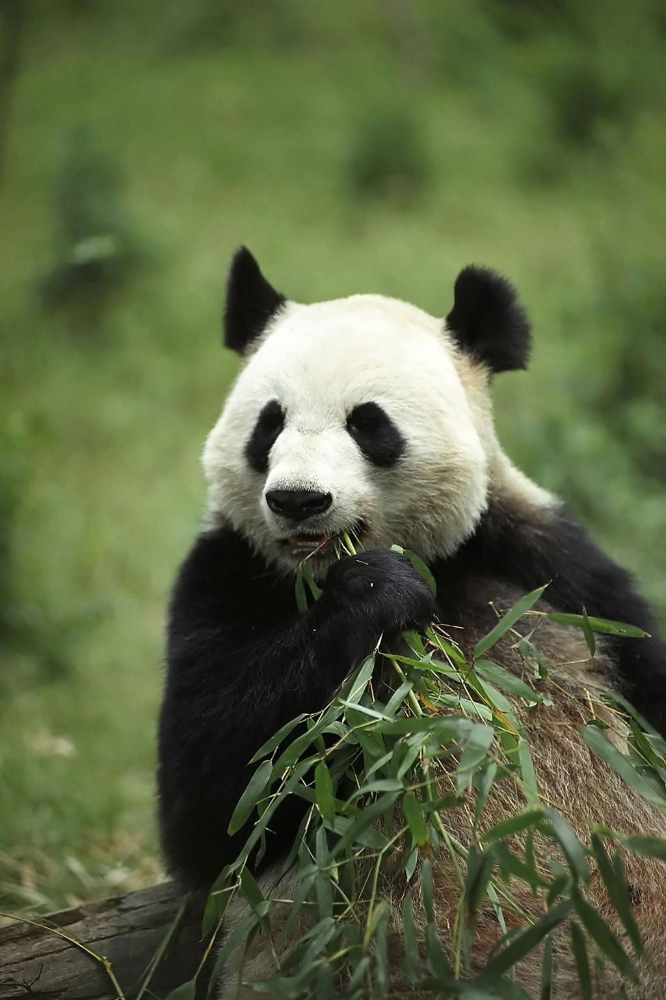
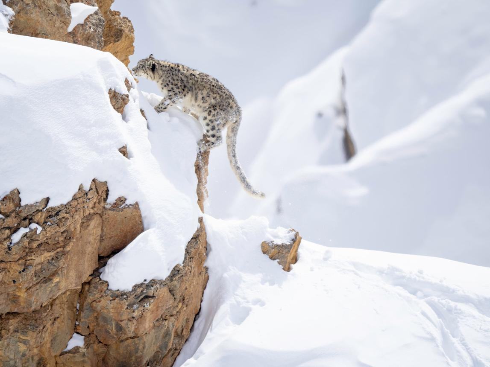
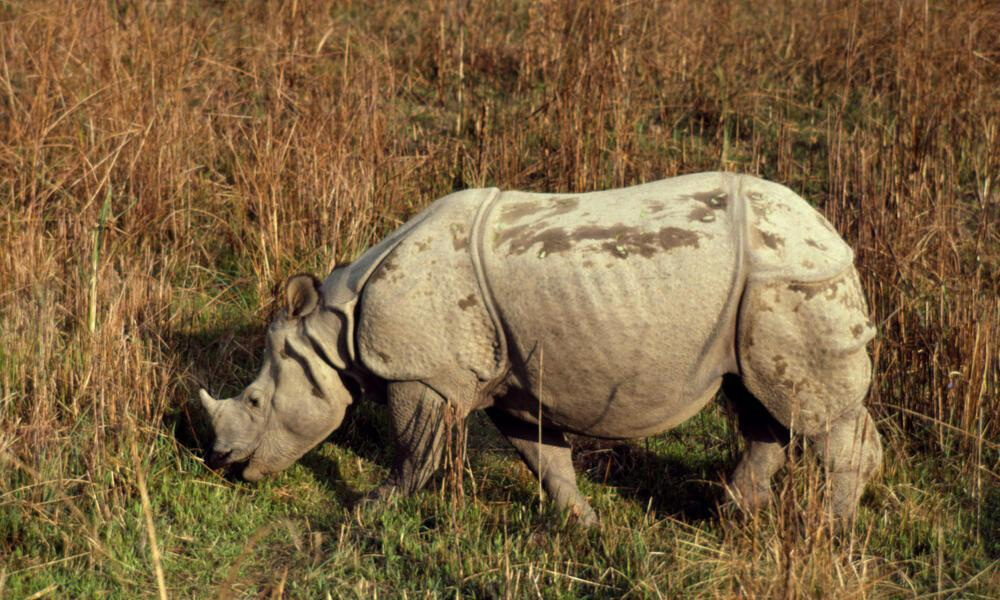
Endangered animals are animals that are at risk of becoming extinct because their population is decreasing rapidly. These animals face many dangers such as deforestation, hunting, pollution, climate change, and loss of natural habitats. If endangered animals are not protected, they may disappear completely from the Earth in the future. Wildlife conservation is important to protect these species and maintain the balance of nature.
Many famous animals are considered endangered today. Tiger is one of the most endangered big cats because of illegal hunting and habitat destruction. Giant panda is known for its peaceful nature and mainly lives in bamboo forests. Snow leopard lives in cold mountain regions and is rarely seen in the wild. Other endangered animals include rhinos, orangutans, sea turtles, gorillas, and certain whale species.
Endangered animals are important for maintaining biodiversity and ecological balance. Every animal plays a role in the food chain and helps nature function properly. For example, predators control animal populations, while other animals help in pollination and seed dispersal. Losing one species can affect many other living organisms in the ecosystem.
Governments and wildlife organizations around the world are working to protect endangered animals through national parks, wildlife sanctuaries, breeding programs, and anti-poaching laws. People can also help by protecting forests, reducing pollution, avoiding products made from animal parts, and supporting wildlife conservation programs. Saving endangered animals is necessary to preserve the beauty and diversity of life on Earth.
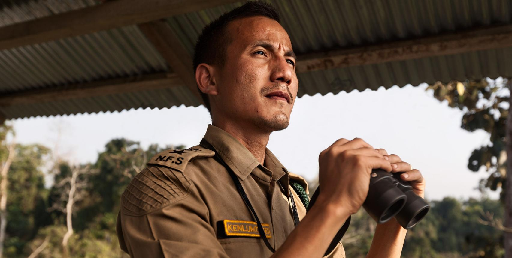
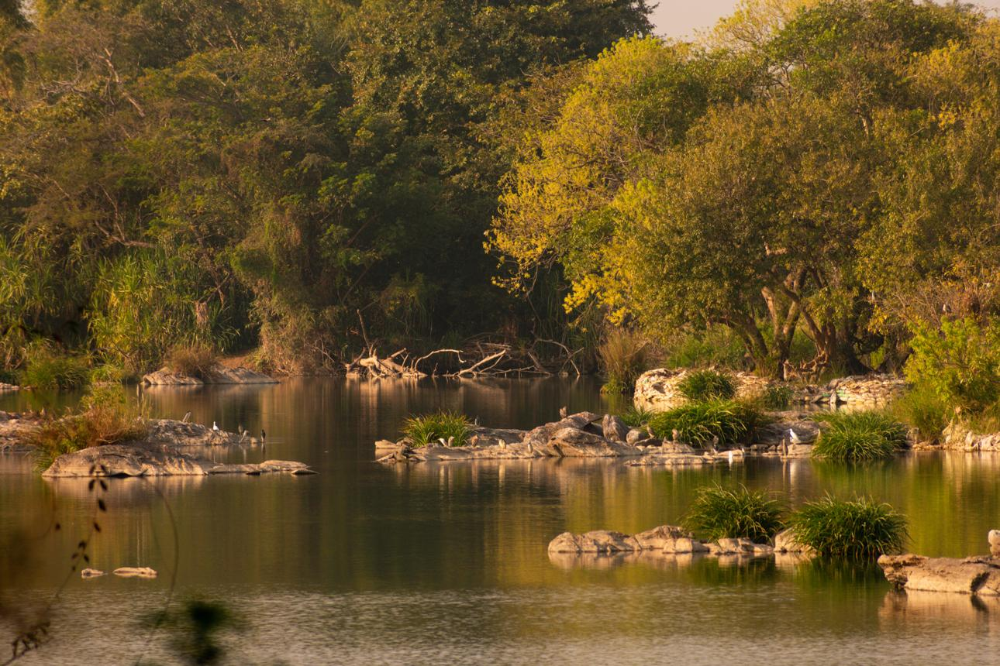
Wildlife conservation is the protection and preservation of wild animals, birds, plants, and their natural habitats. It is important because wildlife plays a major role in maintaining ecological balance and supporting healthy ecosystems. Every living organism in nature is connected through the food chain, and the disappearance of one species can affect many others. Conservation helps protect biodiversity and ensures that future generations can enjoy the beauty of nature and wildlife.
Wild animals and forests provide many benefits to humans and the environment. Forests produce oxygen, absorb carbon dioxide, and help control climate conditions. Animals help in pollination, seed dispersal, and maintaining balance in ecosystems. Marine animals also support ocean health and global biodiversity. Protecting wildlife means protecting the natural systems that support life on Earth.
Many species are threatened due to deforestation, pollution, illegal hunting, climate change, and habitat destruction. Wildlife conservation helps reduce these dangers through national parks, wildlife sanctuaries, conservation laws, and awareness programs. Governments and environmental organizations work together to protect endangered species and restore damaged habitats.
People can contribute to wildlife conservation in many ways. Planting trees, reducing plastic waste, protecting forests, avoiding illegal wildlife products, and spreading awareness about nature protection are simple but effective actions. Supporting conservation programs and respecting animals in their natural habitats can help create a safer environment for wildlife. Conserving wildlife is essential for maintaining the balance of nature and protecting the planet for future generations.